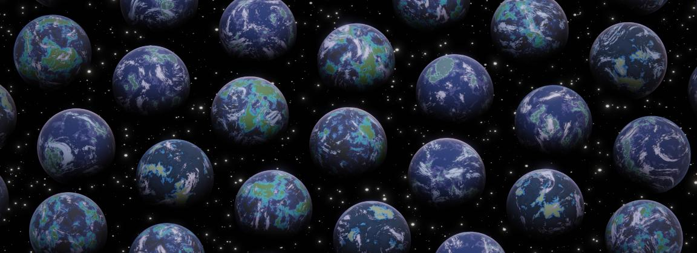
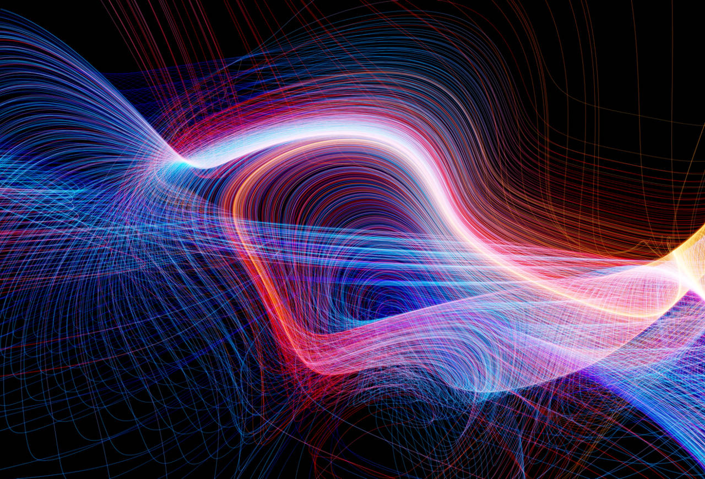

Multiverso
Más allá de nuestro universo
El concepto de multiverso fue mencionado por primera vez en 1895 por William James, aunque siglos antes ya aparecía en la obra Bhagavata-purana de Viasa. Este término engloba espacio, tiempo, materia, energía y movimiento, y sigue siendo objeto de nuevos descubrimientos científicos. La teoría del Big Bang resulta insuficiente para explicarlo completamente, y algunos científicos proponen múltiples explosiones, una por cada universo. Además, ideas antes consideradas ficción, como universos paralelos o ocultos que podrían interactuar con el nuestro, están ganando relevancia en la comunidad científica.

Teoría de los Universos Infinitos
La teoría de los universos infinitos propone una expansión constante e infinita, sugiriendo que podríamos existir en múltiples realidades simultáneamente. Contrasta con el estudio de Stephen Hawking, quien veía el universo como un holograma con una expansión aparente y limitaba la cantidad de universos a un número finito. Por otro lado, el investigador Bruno Bento desafía la idea del Big Bang, planteando que la materia podría no tener un inicio, sino existir eternamente sin un comienzo definido.
Teoría de los Universos Burbuja
La teoría de los universos burbuja sostiene que estos pueden colisionar entre sí, algo que pudo ocurrir en los inicios del universo, aunque ahora es menos probable debido a su expansión constante. La cosmóloga Hiranya Peiris y su equipo han encontrado evidencia en la radiación de fondo de microondas (CMB), observando anomalías que refuerzan esta teoría. Sin embargo, aunque estos descubrimientos la respaldan, sigue siendo difícil abandonar las teorías tradicionales.
Teoría de Cuerdas
En tanto, la teoría de cuerdas propone que las partículas subatómicas, como los electrones y los quarks, no son partículas puntuales, sino que son en realidad cuerdas vibrantes extremadamente p equeñas, mucho más pequeñas que cualquier cosa que se haya medido hasta ahora.

La teoría de cuerdas también propone la existencia de dimensiones adicionales más allá de las tres dimensiones espaciales y la dimensión temporal que observamos en nuestra experiencia diaria. Estas dimensiones adicionales podrían estar enrolladas o compactadas a escalas extremadamente pequeñas, lo que significa que no las podemos ver directamente, pero tienen un efecto en las propiedades de las partículas y las fuerzas. Concretamente, la teoría postula la existencia de 11 dimensiones, donde la supergravedad interactúa entre membranas que van desde 2 hasta 5 dimensiones. Esto sugiere la existencia de un número infinito de universos paralelos, algunos de los cuales pueden ser similares al nuestro con diferencias mayores o menores, mientras que otros podrían tener 4 o 5 dimensiones.